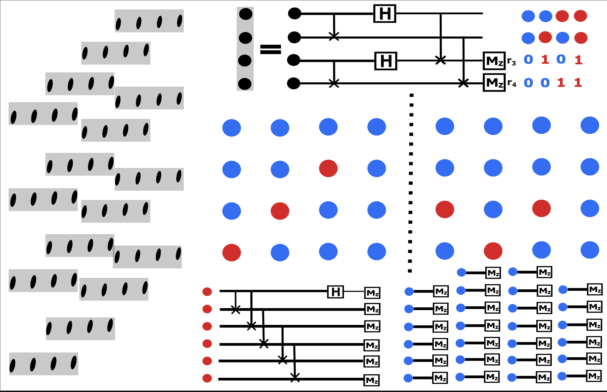

Non-local k-copy Pauli Shadow Tomography
Non-local Pauli shadow tomography
We have proved the inefficiency of single-copy strategy while an efficient two-copy Bell strategy exists. In analogy, we try to break the lower bound in the last section by extending the single-copy shadow tomography method into the multi-copy case.
We first prove the commutativity of the family \mathcal{A}. Let S_P = \mathrm{sym}_{\pi}\left[P^{\otimes 2} \otimes (I^{\otimes 2})^{\otimes (k-1)} \right] and abbreviate \pi = \mathbb{P}^d_{\pi}. The operators are A_P = S_P \pi and A_Q = S_Q \pi. First, \pi commutes with S_P, \forall P \in \mathcal{P} since S_P is symmetrized under repeat operation of \pi. Now, the commutator [A_P, A_Q] became: \begin{align*} [A_P, A_Q] &= (S_P \pi) (S_Q \pi) - (S_Q \pi) (S_P \pi) \\ &= S_P (S_Q \pi) \pi - S_Q (S_P \pi) \pi \quad \text{(since $\pi$ commutes with $S_P$ and $S_Q$)} \\ &= [S_P, S_Q]\pi^2. \end{align*} Finally, we show that [S_P, S_Q] = 0. This is because each term within S_P = \mathrm{sym}_{\pi}\left[P^{\otimes 2} \otimes (I^{\otimes 2})^{\otimes (k-1)} \right] and S_Q = \mathrm{sym}_{\pi}\left[Q^{\otimes 2} \otimes (I^{\otimes 2})^{\otimes (k-1)} \right] either have commutators of operators on disjoint subsystems or have two-replica terms with [P^{\otimes 2}, Q^{\otimes 2}] = [P \otimes P, Q \otimes Q] = 0. Thus we have [S_P, S_Q] = 0 for all Pauli operators P, Q . Thus, [S_P, S_Q] = \mathbf{0}, which implies [A_P, A_Q] = \mathbf{0}. We now calculate \begin{align*} \mathrm{tr}(A_P \rho^{\otimes 2k}) &= \mathrm{tr}[\mathrm{sym}_{\pi}(P^{\otimes 2} \otimes \mathbb{I}^{\otimes 2k-2}) \pi \rho^{\otimes 2k}] = \mathrm{tr}[(P^{\otimes 2} \otimes \mathbb{I}^{\otimes 2k-2}) \pi \rho^{\otimes 2k}]\\ &=\mathrm{tr}[(P\rho \otimes \rho^{\otimes k-1}) \mathbb{P}^{d}_{(\mathrm{odds})} \otimes (P\rho \otimes \rho^{\otimes k-1}) \mathbb{P}^{d}_{(\mathrm{even})}]\\ &=[\mathrm{tr}(P\rho^k)]^2 \end{align*} Thus, measuring the commuting family \{A_P\} simultaneously yields estimates for |\mathrm{tr}(P\rho^k)| for all P \in \mathcal{P}_n. ◻
Denoting f_P = |\mathrm{tr}(P \rho^k)|. We then construct the quantum state \sigma such that \left||\mathrm{tr}(P \sigma^k)|- f_P\right| \leq \varepsilon. Such a state \sigma always exist and can be constructed if we knew an \varepsilon additive error estimator for \{f_P\}_{P \in \mathcal{O}}, but might cannot be found computationally efficient. Then we estimate \mathrm{tr}(\rho^k P)\cdot \mathrm{tr}(\sigma^k P) by measuring the commuting family \{A_P\}_{P\in \mathcal{O}} on state \rho^{\otimes k} \otimes \sigma^{\otimes k} for \mathcal{O}(\varepsilon^{-4}\log(|\mathcal{O}|)) times. This will give us an estimator g_P such that |g_P - \mathrm{tr}(\rho^k P)\cdot \mathrm{tr}(\sigma^k P)|\leq \varepsilon^2. Now we set E_P = 0 if f_P \leq \varepsilon and E_P = g_P/\mathrm{tr}(P \sigma^k) if else. We thus noted that: \begin{align*} \text{If~} f_P < 2\varepsilon, \quad |E_P - \mathrm{tr}(P \rho^k)| &= |\mathrm{tr}(P \rho^k)| \leq ||\mathrm{tr}(P \rho^k)| - f_P| + |f_P| \leq 3\varepsilon \\ \text{If~} f_P \geq 2\varepsilon, \quad |E_P - \mathrm{tr}(P \rho^k)| &= |g_P/\mathrm{tr}(P \sigma^k) -\mathrm{tr}(P \rho^k)| \\ &= \frac{|g_P - \mathrm{tr}(P \sigma^k) \cdot \mathrm{tr}(P \rho^k)|}{|\mathrm{tr}(P \sigma^k)|}\\ &\leq \frac{|g_P - \mathrm{tr}(P \sigma^k) \cdot \mathrm{tr}(P \rho^k)|}{f_P - \varepsilon} \leq \frac{\varepsilon^2}{2\varepsilon - \varepsilon} \leq 3\varepsilon. \end{align*}
Examples: non-linear Pauli shadow

Step 1: Define the commutants
For k = 2, the commutants we choose writes \{A_{\mathbf{r}} := {2}^{-1}{(\sigma_{\mathbf{r}}\sigma_{\mathbf{r}}\mathbb{I}_n\mathbb{I}_n + \mathbb{I}_n\mathbb{I}_n\sigma_{\mathbf{r}}\sigma_{\mathbf{r}})} \mathrm{S}_{13}\mathrm{S}_{24}\}_{\mathbf{r} \in \mathbb{F}_2^{2n}}.
Step 2: Construct the eigenbasis
Since \sigma_{\mathbf{r}} \otimes \sigma_{\mathbf{r}} \ket{\Phi_{\mathbf{a}}} = (-1)^{[\mathbf{r},\mathbf{a}]}\ket{\Phi_{\mathbf{a}}}, the shared eigenbasis of \mathcal{A} has the form: \begin{align*} \ket{\Psi^{s}_{(\mathbf{a}, \mathbf{b})}}&= \begin{cases} {2^{-1/2}}\left[{\ket{\Phi_{\mathbf{a}_x \mathbf{a}_z}} \otimes \ket{\Phi_{\mathbf{b}_x\mathbf{b}_z} }+s \ket{\Phi_{\mathbf{b}_x \mathbf{b}_z}} \otimes \ket{\Phi_{\mathbf{a}_x\mathbf{a}_z}}}\right] & \text{if~} \mathbf{a} < \mathbf{b}, \\ \ket{\Phi_{\mathbf{a}_x \mathbf{a}_z}}\ket{\Phi_{\mathbf{a}_x \mathbf{a}_z}}& \text{if~} \mathbf{a} = \mathbf{b}. \end{cases} \end{align*} with eigenvalues \lambda_{(s,\mathbf{a},\mathbf{b})} :=s \cdot 2^{-1}[(-1)^{[\mathbf{r}, \mathbf{a}]} + (-1)^{[\mathbf{r}, \mathbf{b}]}] and s = \pm 1.
Step 3: Measurement protocol
After implementing the measurement \left\{\ket{\Psi^{s}_{(\mathbf{a}, \mathbf{b})}} \bra{\Psi^{s}_{(\mathbf{a}, \mathbf{b})}}\right\}_{s \in \{+,-\}, \mathbf{a},\mathbf{b} \in \mathbb{F}_2^{2n}} for T times and recording the results \{(s_t,\mathbf{a}_t, \mathbf{b}_t)\}_{t = 1}^{T}, the average of A_{\mathbf{r}} = \sum \lambda_{(\pm,\mathbf{a},\mathbf{b})} \ket{\Psi^{\pm}_{(\mathbf{a}, \mathbf{b})}} \bra{\Psi^{\pm}_{(\mathbf{a}, \mathbf{b})}} can then be estimated by calculating the estimator T^{-1}\sum_{t = 1}^{T} \lambda_{(s_t, \mathbf{a}_t,\mathbf{b}_t)}. To realize such a measurement, we refer to construction in [1] and noted that \begin{align*} \ket{\Psi^{s}_{\mathbf{a}, \mathbf{b}}}&= \mathrm{CNOT}_{34}\mathrm{CNOT}_{12}\mathrm{H}_3\mathrm{H}_1 \cdot \begin{cases} 2^{-1/2} \left[{\ket{\mathbf{a}_x \mathbf{a}_z\mathbf{b}_x\mathbf{b}_z} +s \ket{\mathbf{b}_x \mathbf{b}_z\mathbf{a}_x\mathbf{a}_z}}\right] &\text{if~} \mathbf{a} < \mathbf{b}\\ \ket{\mathbf{a}_x \mathbf{a}_z\mathbf{b}_x\mathbf{b}_z}&\text{if~} \mathbf{a} = \mathbf{b} \end{cases},\\ &= \mathrm{CNOT}_{34}\mathrm{CNOT}_{12}\mathrm{H}_3\mathrm{H}_1 \mathrm{CNOT}_{13}\mathrm{CNOT}_{24}\cdot \begin{cases} 2^{-1/2} \left[{\ket{\mathbf{a}_x \mathbf{a}_z} +s \ket{\mathbf{b}_x \mathbf{b}_z}} \right]\ket{\mathbf{a} + \mathbf{b}} &\text{if~} \mathbf{a} < \mathbf{b}\\ \ket{\mathbf{a}_x \mathbf{a}_z} \ket{\mathbf{0} \mathbf{0}}&\text{if~} \mathbf{a} = \mathbf{b} \end{cases},\\ &= \mathrm{CNOT}_{34}\mathrm{CNOT}_{12}\mathrm{H}_3\mathrm{H}_1 \mathrm{CNOT}_{13}\mathrm{CNOT}_{24}\cdot \begin{cases} 2^{-1/2} \left[{\ket{\mathbf{a}^{I}} +s \ket{\bar{\mathbf{a}}^{I}}}\right] \ket{\mathbf{a}^{E}}\ket{\mathbf{a} + \mathbf{b}} &\text{if~} \mathbf{a} < \mathbf{b}\\ \ket{\mathbf{a}_x \mathbf{a}_z} \ket{\mathbf{0} \mathbf{0}}&\text{if~} \mathbf{a} = \mathbf{b} \end{cases}. \end{align*}
This disentangles the qubits on the third and fourth copies. Thus, we can locally implement the gate sequence \mathrm{CNOT}_{13}\mathrm{CNOT}_{24}\mathrm{H}_3\mathrm{H}_1\mathrm{CNOT}_{12}\mathrm{CNOT}_{34} and then measure the 3rd and 4th copies in the computational basis \ket{\mathbf{s}_{3}\mathbf{s}_4}.
Step 5: Extract measurement outcomes
The computational basis measurement gives the difference of vectors \mathbf{a} and \mathbf{b} through: \mathbf{s}_{3} = \mathbf{a}_x + \mathbf{b}_x,\quad \mathbf{s}_{4} = \mathbf{a}_z + \mathbf{b}_z
This information indicates a partition of the 1st and 2nd copies of qubits \{1,\cdots,2n\} = E \cup I, where: - E := \{i \in [2n]| a_i = b_i\} (equal indices) - I:= \{i \in [2n]| \bar{a}_i = b_i\} := \{i_1<i_2<\cdots<i_{|I|}\} (inverted indices)
We then implement: 1. Computational basis measurement \ket{\mathbf{s}^{E}} on qubits in set E 2. GHZ state measurement s^{I} on qubits in set I, formalized by the circuit:
\begin{align*} \frac{1}{\sqrt{2}} \left[{\ket{\mathbf{a}^{I}} + s\ket{\bar{\mathbf{a}}^{I}}} \right] &= \begin{cases} \frac{1}{\sqrt{2}} \left(\bigotimes_{i \in I} X_i + Z_{i_1}\right) \ket{\bar{\mathbf{a}}^{I}} &\text{if~} s = -1,\\ \frac{1}{\sqrt{2}} \left(\bigotimes_{i \in I} X_i + Z_{i_1}\right) \ket{{\mathbf{a}}^{I}} &\text{if~} s = +1, \end{cases}\\ &=\left(\prod_{i = i_1}^{i_{|I|-1}}\mathrm{CNOT}_{i,i+1}\right)^{\dagger} H_{i_1} \left(\prod_{i = i_1}^{i_{|I|-1}}\mathrm{CNOT}_{i,i+1}\right) \begin{cases}\ket{\bar{\mathbf{a}}^{I}} &\text{if~}s = -1,\\\ket{{\mathbf{a}}^{I}} &\text{if~}s = 1.\end{cases} \end{align*} Here we use the fact that since \mathbf{a}< \mathbf{b}, we have a_{i_1} = 0. This then gives the \mathbf{a} vector through \mathbf{a}^{E} = {\mathbf{s}^{E}} and s = +1, \mathbf{a}^{I} = {s}^{I} if a_{i_1} = 0, s = -1, \mathbf{a}^{I} = \bar{s}^{I} if a_{i_1} = 1.
Examples: A General construction
The construction above is useful in generalization to general non-linear shadow [1]. To get a classical shadow of \hat{\rho^t}, analogically, we sample h(\mathbf b,V):=\mathcal{M}^{-1}(V^\dagger \ket{\mathbf b}\!\bra{\mathbf b}V) with pseudo-probability \text{Pr}(V)\cdot\text{Pr}(\mathbf b|V): = \text{Pr}(V)\cdot\bra{\mathbf b} V \rho^t V^\dagger\ket{\mathbf b}. This gives the result \mathbb{E}_{V \sim \mathcal{U}}\sum_{\mathbf b}\mathcal{M}^{-1}(V^\dagger \ket{\mathbf b}\!\bra{\mathbf b}V) \bra{\mathbf b} V \rho^t V^\dagger\ket{\mathbf b} = \rho^{t}. But \text{Pr}(\mathbf b|V): = \bra{\mathbf b} V \rho^t V^\dagger\ket{\mathbf b} is not a valid probability distribution. Fortunately, it can be effectively realized based on the estimator of \bra{\mathbf b} V \rho^t V^\dagger\ket{\mathbf b} in Lemma (gen_swap_est) operator \{\ket{\mathbf b}\!\bra{\mathbf b}\}_{\mathbf b \in \{0,1\}^{n}} is mutually commutant and the operator set \{Q_{\mathbf b}\}_{\mathbf b}, where Q_{\mathbf{b}}:=\text{sym}(\ket{\mathbf b}\!\bra{\mathbf b}) = t^{-1} \sum_{i =1}^{t} \ket{\mathbf{b}}\!\bra{\mathbf{b}}_i fully distinguished the spectrum of \text{SWAP}_t^{\otimes n}. We use the common eigenvectors \ket{\psi_{\mathbf x}} of the operator set \{\text{SWAP}_{t}^{\otimes n}\}\cup \{Q_{\mathbf b}\}_{\mathbf b \in \{0,1\}^n} and calculates \begin{align*} \bra{\mathbf b} V \rho^t V^\dagger\ket{\mathbf b} =f(\mathbf{x})\text{Pr}(\mathbf b | \mathbf x)\text{Pr}(\mathbf x | \mathbf V) , \text{~where~}\left\{\begin{aligned} &f(\mathbf{x}):= \bra{\psi_{\mathbf x}}\text{SWAP}_{t}^{\otimes n}\ket{\psi_{\mathbf x}}, \\ &\text{Pr}(\mathbf b | \mathbf x):=\bra{\psi_{\mathbf x}}Q_{\mathbf b}\ket{\psi_{\mathbf x}},\\ &\text{Pr}(\mathbf x | \mathbf V):=\bra{\psi_{\mathbf x}}(V\rho V^\dagger)^{\otimes t}\ket{\psi_{\mathbf x}}.\end{aligned}\right. \end{align*} Here \mathbf{x} \in \mathbb{F}_2^{n\cdot t} labeled different eigenvectors. Then sampling h(\mathbf b,V) with pseudo-probability \bra{\mathbf b} V \rho^t V^\dagger\ket{\mathbf b} then is equivalent to sample f(\mathbf{x})h(\mathbf b,V) with probability \text{Pr}(\mathbf b | \mathbf x)\text{Pr}(\mathbf x | \mathbf V)\text{Pr}(V). If we can build an efficient quantum circuit \mathcal{R}\ket{\mathbf x} = \ket{\psi_{\mathbf x}}, this sampling can be realized. Based on this, we first give the form of common eigenvectors \ket{\psi_{\mathbf x}} and then discuss the efficient implementation of \mathcal{R}. Because (\text{SWAP}_{t})^{t} = \mathbb{I}, \text{SWAP}_t must have eigenvalue e^{i2\pi/t}. This conclusion generalized to Lemma 3 below.
Proof. This can be proved by direct calculation. \begin{align*} &\text{SWAP}_{t}^{\otimes n} \ket{\Psi_{[\mathbf z]}^{k}} = \sqrt{|[\mathbf{z}]|^{-1}} \sum_{r = 0}^{|[\mathbf{z}]| - 1}e^{\frac{(2\pi i)rk}{|[\mathbf{z}]|}} \ket{\tau^{r+1}(\mathbf z)} = e^{-2k\pi i/|[\mathbf{z}]|}\ket{\Psi_{[\mathbf z]}^{k}}.\\ &Q_{\mathbf b}\ket{\Psi_{[\mathbf z]}^{k}} = \sqrt{|[\mathbf{z}]|^{-1}} \sum_{r = 0}^{|[\mathbf{z}]| - 1}e^{\frac{(2\pi i)rk}{|[\mathbf{z}]|}} Q_{\mathbf b}\ket{\tau^{r}(\mathbf z)} = t^{-1}\cdot \# (\mathbf{b} = \mathbf{z}_i) \ket{\Psi_{[\mathbf z]}^{k}}. \end{align*} ◻
Take t = 2, the eigenvectors writes \{\ket{\mathbf{s}\mathbf{s}}\}_{\mathbf{s} \in \mathbb{F}_2^{n}} \cup \{\sqrt{2^{-1}}(\ket{\mathbf{s}_1{\mathbf{s}_2}}+\ket{{\mathbf{s}_2}\mathbf{s}_1}), \sqrt{2^{-1}}(\ket{\mathbf{s}_1{\mathbf{s}_2}}-\ket{{\mathbf{s}_2}\mathbf{s}_1})\}_{\mathbf{s}_1\neq \mathbf{s}_2 \in \mathbb{F}_2^n}, which counts 2^n + 2^n(2^n - 1) numbers of linearly independent basis, thus being complete. This leads us to find circuit that transform the 2n-qubits computational basis into these bases. Specifically, \begin{align*} \mathcal{R} \ket{\mathbf{s}_1 \mathbf{s}_2} = \left\{ \begin{aligned} &\ket{\mathbf{s}_1 \mathbf{s}_2} &&\text{~if~} \mathbf{s}_1 = \mathbf{s}_2 \\ &\sqrt{2^{-1}}(\ket{\mathbf{s}_1{\mathbf{s}_2}}+\ket{{\mathbf{s}_2}\mathbf{s}_1}) &&\text{~if~} \mathbf{s}_1 < \mathbf{s}_2 \\ &\sqrt{2^{-1}}(-\ket{\mathbf{s}_1{\mathbf{s}_2}}+\ket{{\mathbf{s}_2}\mathbf{s}_1}) &&\text{~if~} \mathbf{s}_1 > \mathbf{s}_2. \end{aligned} \right. \end{align*} This pinned down the measurement cirucit by two steps: (i).Check whether \mathbf{s}_1 = \mathbf{s}_2 by transversal CNOT gates, (ii).On the different parts, with length l < n and most significant position p_{m}, implements \bar{H}:= \sqrt{2^{-1}} (X^{\otimes l} +Z_{p_m}) on those qubits. The step(ii) involved non-local operation within one of the copies. This is why we named it non-local multi-copy (NLMC) shadow.
Efficiency analysis.
As summarized in Lemma 4, the variance of NLMC shadow to estimate \text{tr}(O \rho^t) with unitary sampled from V \sim \mathcal{E} is upper bounded by the variance of single-copy shadow to estimate \text{tr}(O \rho) with the same unitary ensemble V. This means that if O is (i).low weight Pauli operators or (ii)low rank operators, NLMC shadow will have \text{poly}(n) sample complexity by taking \mathcal{E} = \text{Cliff}_{n}, \text{Cliff}(2)^{\otimes n} separately, which is exponentially faster compared to single copy shadow tomography in Eq.[eq:singlecp_shadow_nonlinear].
Proof. To show the unbiasedness, according to Eq.[eq:tpower_shadow], we noted that \begin{align*} \mathbb{E}_{V \sim \mathcal{E}} \mathbb{E}_{(\mathbf{x},\mathbf{b}) \sim \text{Pr}(\mathbf{b}|\mathbf{x})\text{Pr}(\mathbf{x}|V)}f(\mathbf x) \cdot V^\dagger \ket{\mathbf b}\!\bra{\mathbf b}V = \mathbb{E}_{V \sim \mathcal{E}}\bra{\mathbf b} V \rho^t V^\dagger\ket{\mathbf b} \cdot V^\dagger \ket{\mathbf b}\!\bra{\mathbf b}V = \mathcal{M}(\rho^t). \end{align*} ◻